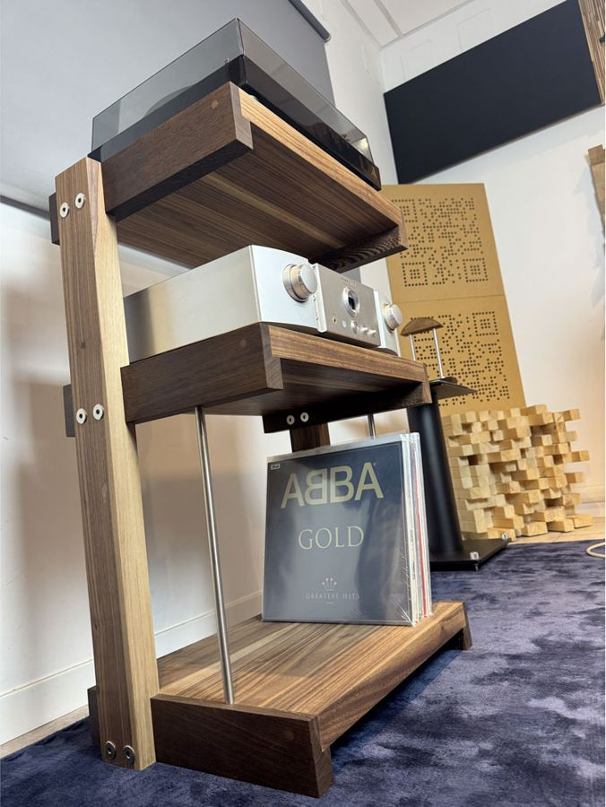

Mobile hi-fi
Extrasound Vinyl
Il mobile hi-fi in legno massello per chi ascolta vinili: il giradischi sul piano, l'amplificatore al centro e fino a 90 dischi sotto.
Essenza
- Legno massello
- Fino a 90 LP
- 23 kg
Un piano per ogni cosa.
Tre livelli pensati sul peso e sulle misure degli apparecchi. Tocca un livello per vederlo nel mobile.



Le misure.
Struttura e ripiani sono in legno massello, con i bordi dei ripiani in wengè. Le misure cambiano di poco tra le due essenze.
Chiedi informazioniDimensioni (L × H × P)57,6 × 82,5 × 39,6 cm
Ripiani53,6 × 39,6 cm
Altezza utile centrale28,4 cm
Altezza utile inferiore39 cm
Portata20 kg piano · 20 kg centrale · 40 kg inferiore
Capienzacirca 90 LP
Peso23 kg
MaterialeLegno massello di Faggio o Noce Canaletto
Bordi dei ripianiWengè